¿Mildiu o no?
Diez imágenes de viñedo. Decide si hay mildiu, como lo haría una persona experta.
Antes de jugar: el problema
El Mildiu: Enfermedad de la vid causada por un organismo parecido a un hongo (Plasmopara viticola). Se ve como manchas amarillentas, «de aceite», en el haz de las hojas. (Plasmopara viticola) es una de las enfermedades más destructivas de la vid (Gessler et al., 2011; Poblete-Echeverría et al., 2025). Detectarlo a tiempo permite tratar justo cuando hace falta y evitar pérdidas.
Qué es el mildiu
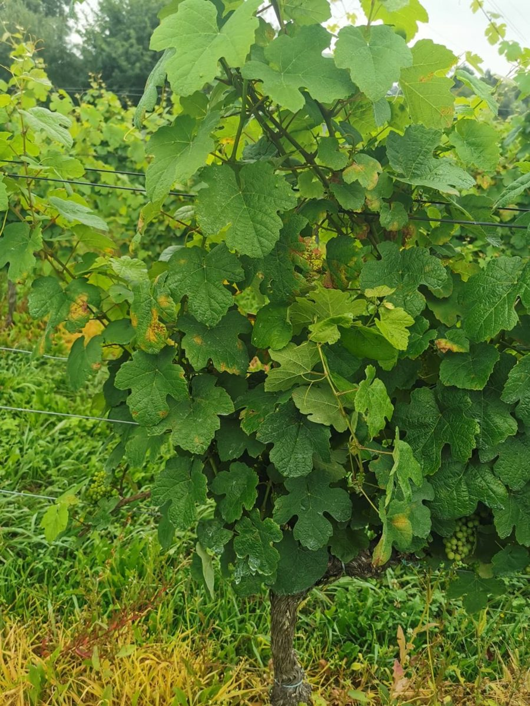
El mildiu lo causa Plasmopara viticola, un microorganismo parecido a un hongo (un oomiceto) que vive dentro de los tejidos verdes de la vid, y que se propaga con tiempo húmedo y templado (Gessler et al., 2011). Es una de las enfermedades más destructivas de las zonas vitivinícolas: reduce la cosecha y la calidad de la uva (Poblete-Echeverría et al., 2025).
Puede afectar a hojas, brotes y racimos.
Qué es una mancha de aceite
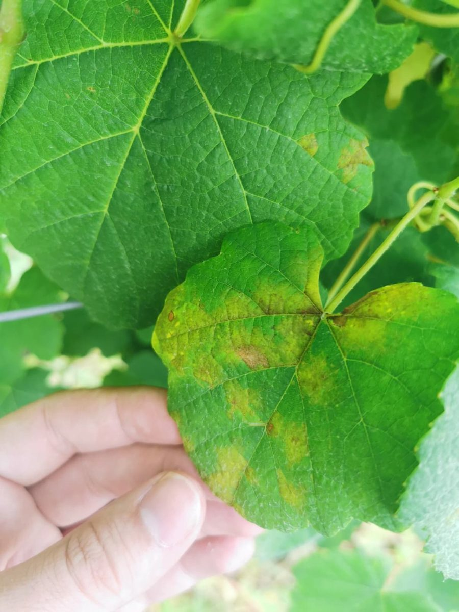
Es el síntoma más reconocible en el haz de la hoja: una zona amarillenta y como translúcida, parecida a una gota de aceite sobre papel. Con el tiempo, el tejido se oscurece y se seca (Gessler et al., 2011; Hernández et al., 2024).
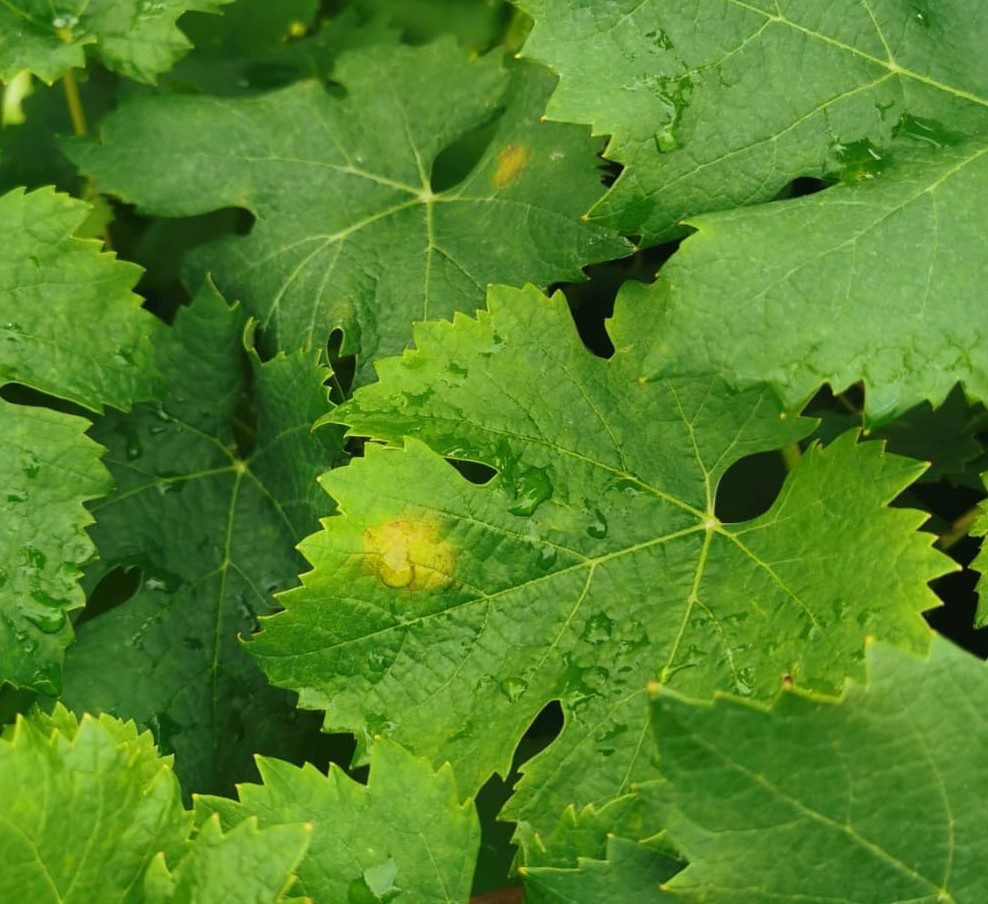
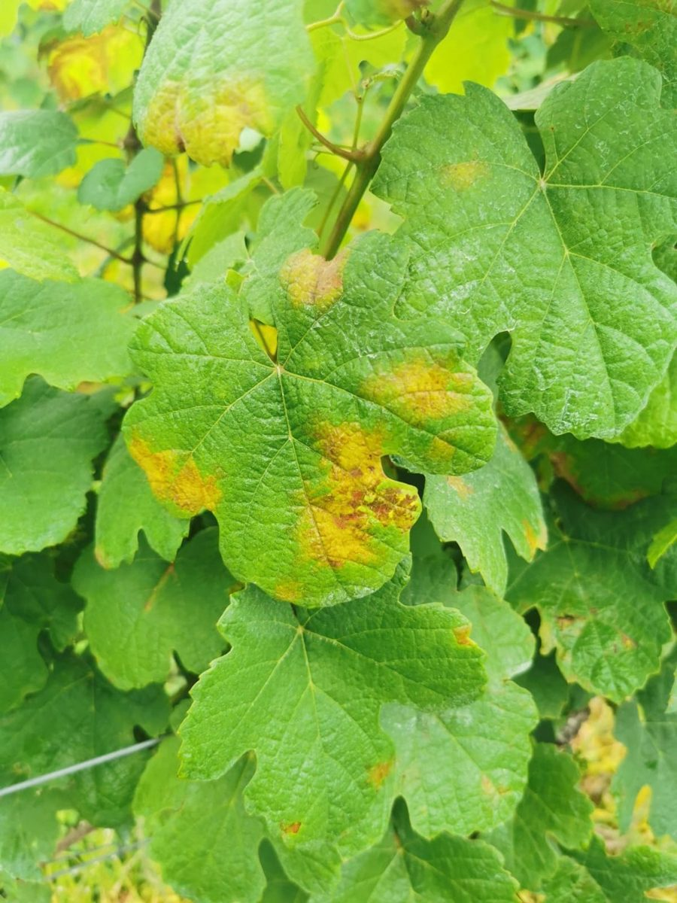
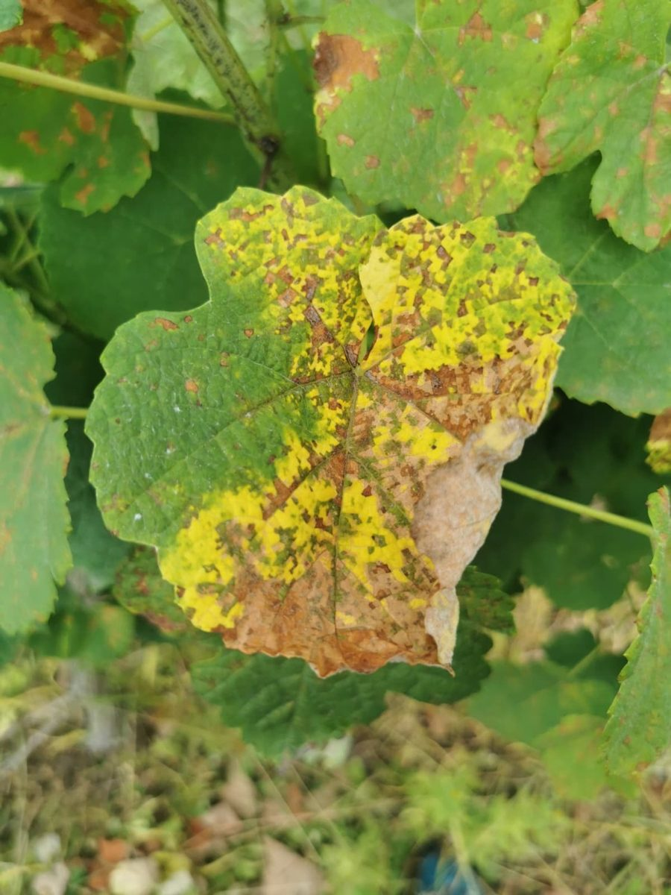
La pelusilla blanca: esporulación
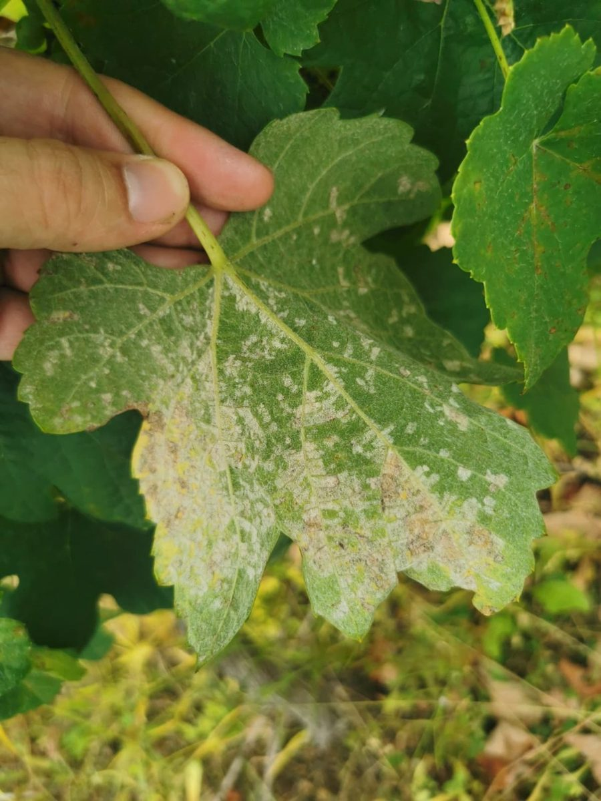
Si el ambiente es húmedo, por el envés de la mancha aparece una pelusilla blanquecina. Es la esporulación: el organismo produce las estructuras con las que se propaga a otras hojas (Gessler et al., 2011; Hernández et al., 2024).
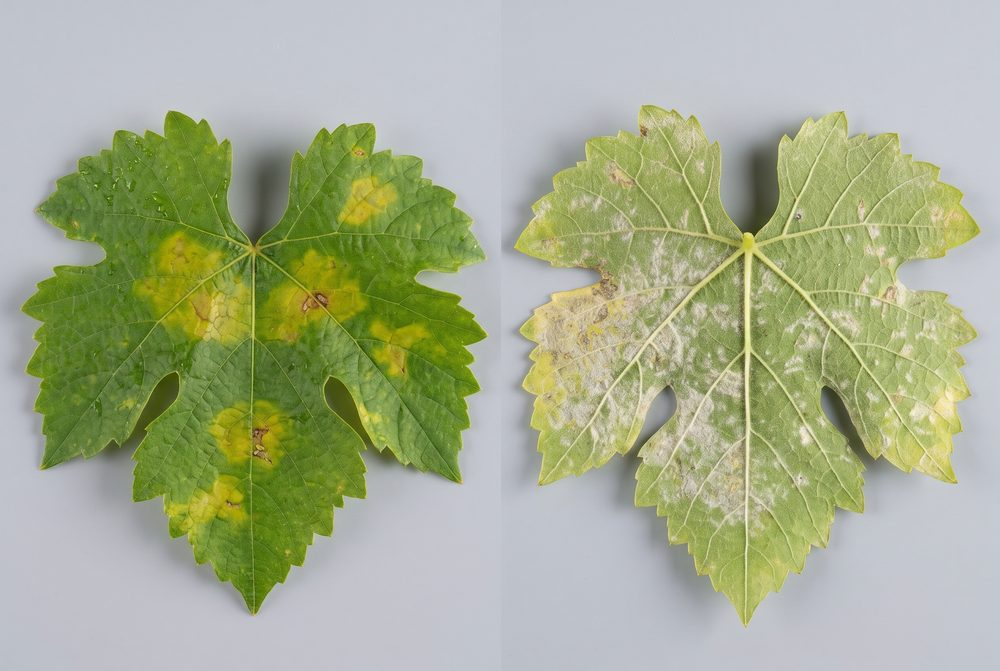
El mildiu también ataca a los racimos
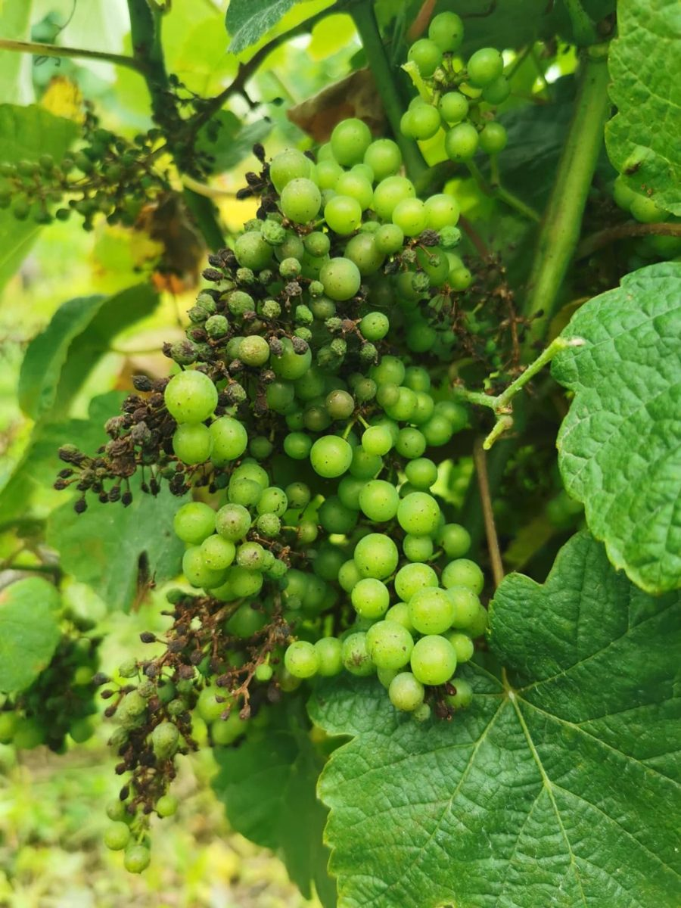
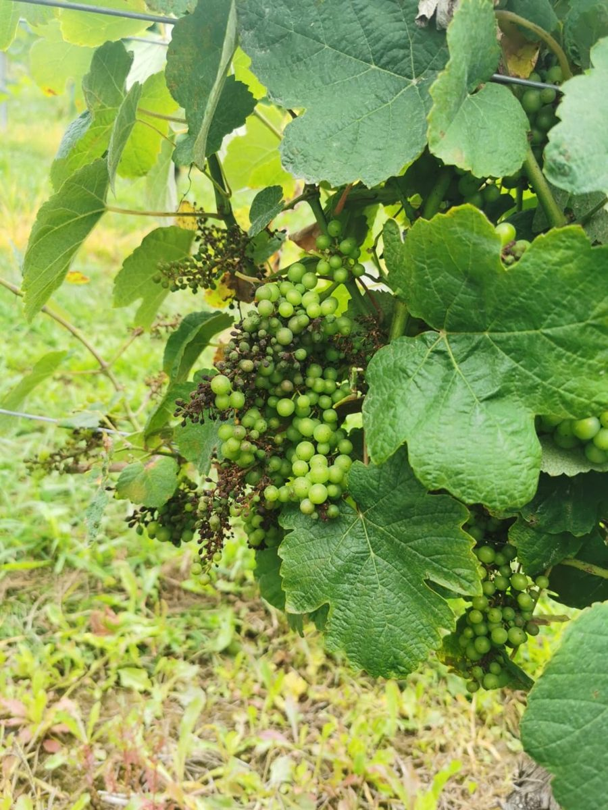
Además de las hojas, la enfermedad puede afectar a los racimos jóvenes (Gessler et al., 2011). Este reto se centra en las hojas: detectar sus síntomas es clave porque suelen ser la primera señal de la enfermedad (Hernández et al., 2024).
Qué síntomas buscar
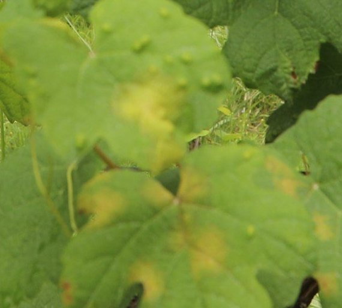
Al principio las manchas son muy pequeñas y muy pálidas, por eso cuesta tanto verlas entre tantas hojas (Hernández et al., 2024). Detectar los síntomas en las hojas es clave porque suelen ser la primera señal de la enfermedad. En el juego, al responder verás marcadas las zonas con mildiu.
No confundir: el oídio
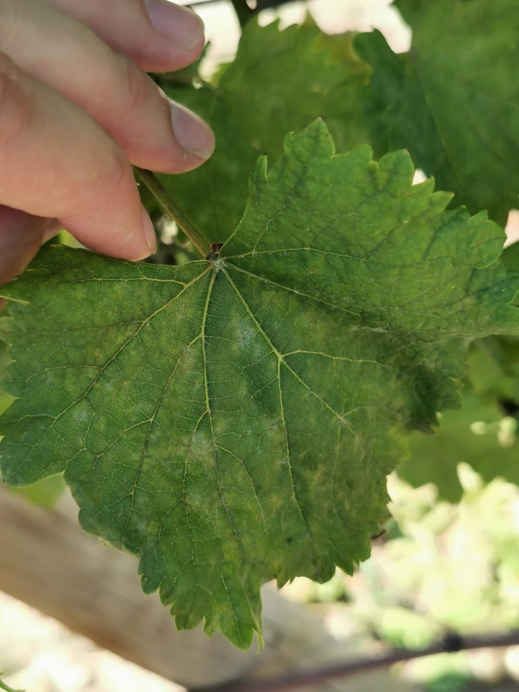
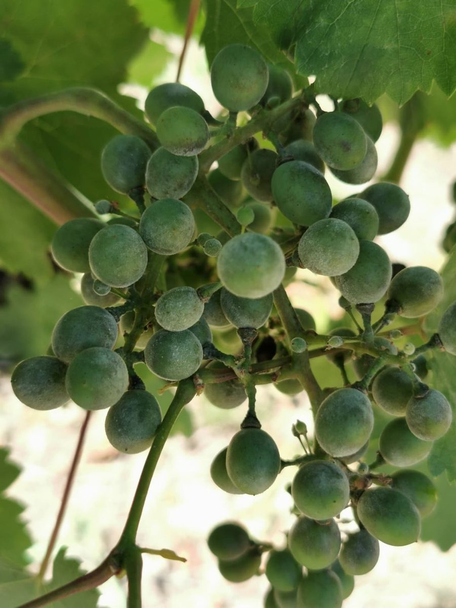
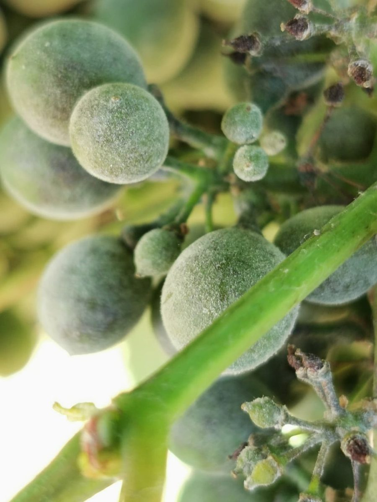
El oídio (Erysiphe necator) es otra enfermedad importante de la vid, causada por un hongo. Se reconoce por un polvillo ceniciento en hojas y racimos (Gadoury et al., 2012). No es lo mismo que el mildiu, y distinguirlas bien forma parte del trabajo de quien vigila el viñedo.
Cómo se hacía
Tradicionalmente, una persona experta recorre el viñedo y mira las hojas, o se hacen análisis en laboratorio. Es un método laborioso, subjetivo y que exige personal cualificado (Hernández et al., 2021; 2024).
Cómo se hace ahora
Se fotografía la vegetación, a mano o desde un vehículo en marcha, y redes neuronales buscan los síntomas. En campo, un modelo que localiza zonas con síntomas (red U-Net con codificador MobileViT-S) alcanzó un 86 % de acierto y una puntuación F1 del 82 % al clasificar zonas con y sin síntomas (Hernández et al., 2025). Otro enfoque, que clasifica trozos de imagen y los recorre con una ventana deslizante (EfficientNetV2S), logró un 91 % de acierto y un F1 de 0,92 (Hernández et al., 2024), y permite ver en qué zonas «se fija» la IA para decidir.
Los límites
Los síntomas iniciales son diminutos, la luz cambia de una foto a otra y algunas hojas con colores raros se parecen al mildiu. Los propios artículos presentan estos resultados como prometedores, no como un problema resuelto, y hablan de validar en condiciones reales (Hernández et al., 2024; 2025).
Ahora te toca a ti
Mira
Verás 10 imágenes del viñedo: algunas sanas, otras con mildiu y otras que engañan.
Decide
Pulsa «Con mildiu» o «Sin mildiu».
Aprende
Después de cada imagen, te explicamos qué había y qué síntomas mirar.
Para quien no puede ver las imágenes: en lugar de jugar, repasas 10 casos con una descripción en texto y su resultado. Las descripciones son generales para cada tipo de caso.
Sin límite de tiempo, pero se cuenta cuánto tardas por imagen para compararte con la IA al final. No se guarda nada fuera de tu navegador.
Las zonas rodeadas con línea discontinua las marcaron a mano las personas que etiquetaron la imagen; no es una predicción de la IA.
Resultado de la ronda
| Tipo | Imágenes | Aciertos |
|---|
¿Y la rapidez?
Después de jugar: qué hemos aprendido
Detectar pronto es lo difícil.
Las manchas iniciales son diminutas y se pierden entre las hojas. Si te costaron, estás en buena compañía: es el reto de la investigación.
No todo lo que cambia de color es mildiu.
Una IA, como una persona, puede confundir síntomas parecidos; por eso se entrena con muchos ejemplos etiquetados por personas expertas.
La IA ayuda a mirar, la persona decide.
Localizar los síntomas en todo el viñedo permite tratar solo donde hace falta, pero hay que validar los resultados en campo.
Qué no hemos hecho aquí
En este reto no se ejecuta ningún modelo de IA: las imágenes y su etiqueta proceden del trabajo de las personas que las recogieron y etiquetaron, y los porcentajes de acierto de arriba son los que publican los artículos con sus propios datos de prueba, no los de estas imágenes.
Para saber más
Investigación y datos: Hernández et al.
¿Y cómo se estudia el mildiu en el laboratorio?
Antes de salir al campo, las investigadoras de Televitis inocularon discos de hoja de vid con el patógeno y los fotografiaron día tras día. Así se puede ver cuándo aparecen los primeros síntomas y entrenar a la IA con ejemplos controlados (Hernández et al., 2024). Con ese aprendizaje, el modelo ya puede mirar una foto de campo:
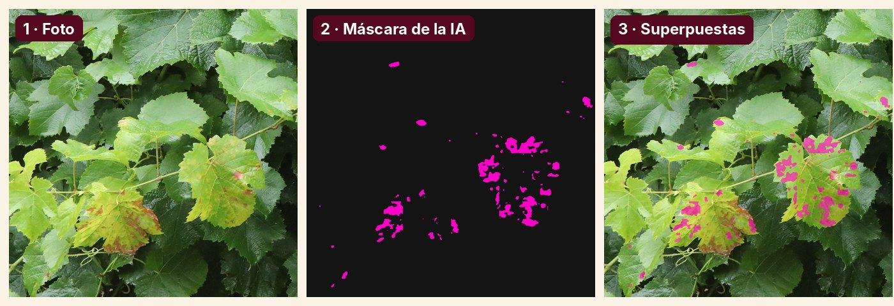
Fíjate en que marca las zonas con manchas, y en que al principio apenas hay nada que marcar: por eso detectar pronto es tan difícil (Hernández et al., 2024). Esta imagen puede haber formado parte del entrenamiento del modelo, así que sirve para ilustrar, no para medir su acierto.
¿Y en el campo? Una persona experta frente a la IA
En el viñedo, las manchas son mucho más pequeñas respecto a toda la cepa. En estas imágenes, la columna central es lo que marcó una persona experta y la de la derecha, lo que predijo el modelo. Se parecen, pero no son idénticas: la IA ayuda a mirar y la persona valida. Algunas de estas fotos pueden haber servido para entrenar el modelo, así que no son una prueba de su acierto.
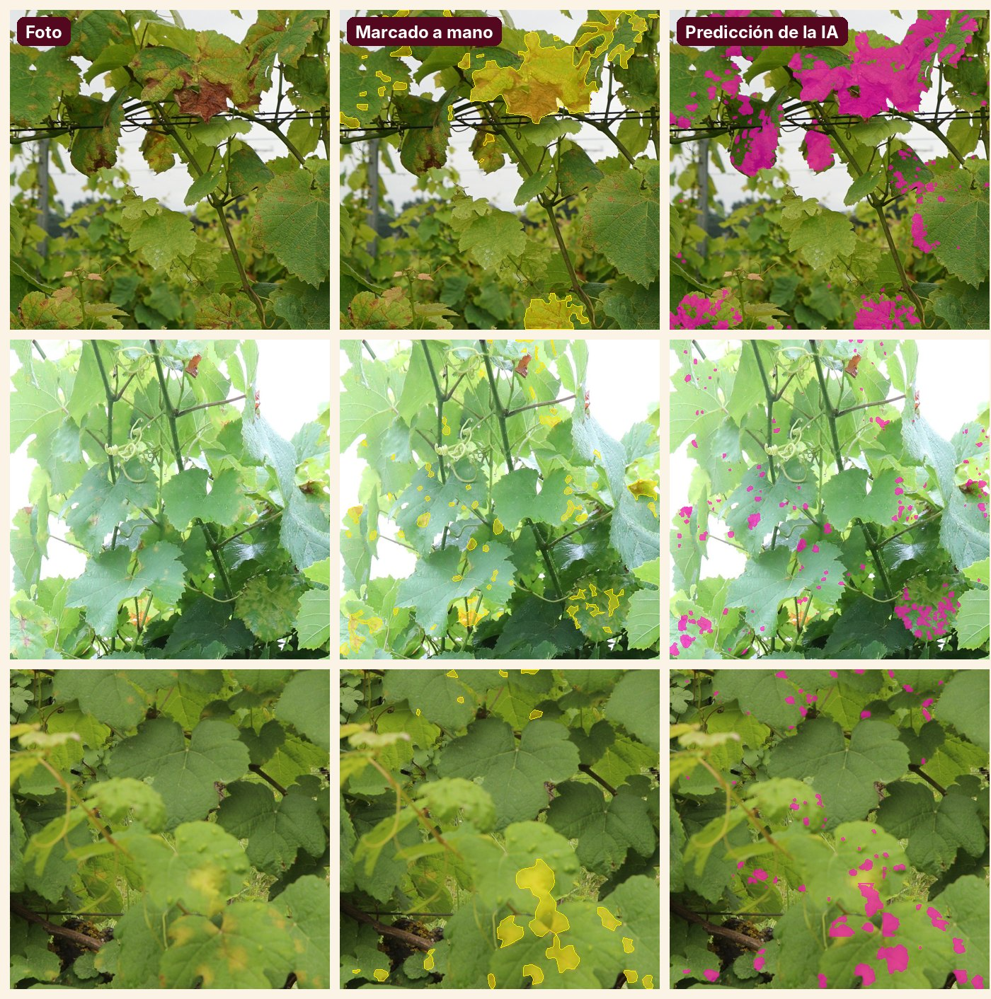
También se ha probado con detectores tipo YOLO, que marcan con cajas las hojas con síntomas en cepas completas (Poblete-Echeverría et al., 2025).
Artículos de investigación en que se basa este reto
- Poblete-Echeverría, C., Hernández, I., Íñiguez, R., Gutiérrez, S., Barrio, I. y Tardáguila, J. (2025). Using artificial intelligence for automatic and fast detection of downy mildew symptoms in grapevine canopies. European Journal of Agronomy, 170, 127755. doi:10.1016/j.eja.2025.127755
- Hernández, I., Silva, R., Melo-Pinto, P., Gutiérrez, S. y Tardaguila, J. (2025). Early detection of downy mildew in vineyards using deep neural networks for semantic segmentation. Biosystems Engineering, 252, 15–31. doi:10.1016/j.biosystemseng.2025.02.007
- Hernández, I., Gutiérrez, S., Barrio, I., Íñiguez, R. y Tardaguila, J. (2024). In-field disease symptom detection and localisation using explainable deep learning: use case for downy mildew in grapevine. Computers and Electronics in Agriculture, 226, 109478. doi:10.1016/j.compag.2024.109478
- Hernández, I., Gutiérrez, S. y Tardaguila, J. (2024). Image analysis with deep learning for early detection of downy mildew in grapevine. Scientia Horticulturae, 331, 113155. doi:10.1016/j.scienta.2024.113155
- Hernández, I., Gutiérrez, S., Ceballos, S., Íñiguez, R., Barrio, I. y Tardaguila, J. (2021). Artificial intelligence and novel sensing technologies for assessing downy mildew in grapevine. Horticulturae, 7(5), 103. doi:10.3390/horticulturae7050103
- Gessler, C., Pertot, I. y Perazzolli, M. (2011). Plasmopara viticola: a review of knowledge on downy mildew of grapevine and effective disease management. Phytopathologia Mediterranea, 50(1), 3–44. doi:https://doi.org/10.14601/Phytopathol_Mediterr-9360
- Gadoury, D. M., Cadle-Davidson, L., Wilcox, W. F., Dry, I. B., Seem, R. C. y Milgroom, M. G. (2012). Grapevine powdery mildew (Erysiphe necator): a fascinating system for the study of the biology, ecology and epidemiology of an obligate biotroph. Molecular Plant Pathology, 13(1), 1–16. doi:10.1111/j.1364-3703.2011.00728.x
Las imágenes son fotografías de viñedo de Televitis (Universidad de La Rioja, ICVV); los recortes se han preparado para este juego. Más en Créditos.